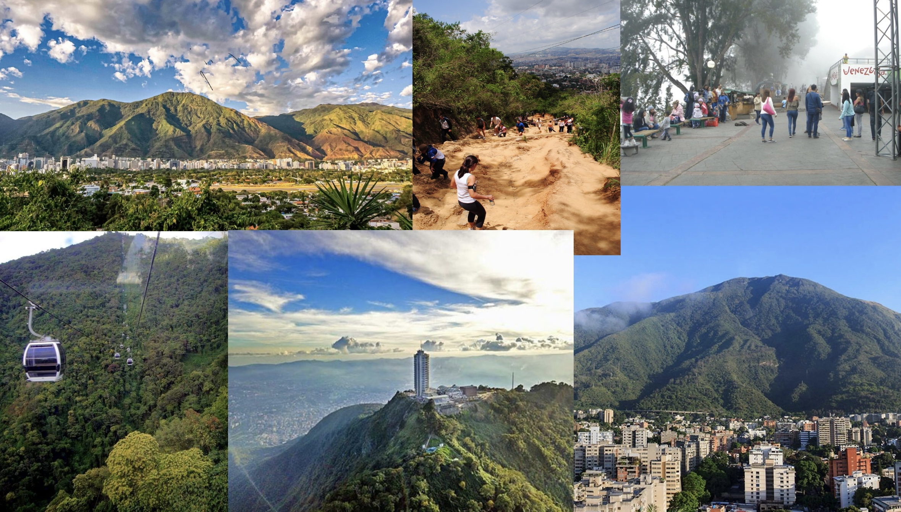

Avila

Cerro Avila, or Avila mountain in English, is one of the highest mountains in the Cordillera de la Costa mountain range that surrounds the capital city of Venezuela, Caracas. The mountain is part of the larger Avila National Park that is known as “el pulmon de la ciudad,” the lungs of the city. At the peak of the mountain also lies the Humboldt Hotel. Founded in 1956, the hotel overlooks the city of Caracas and the surrounding national park. Travel to the Cerro Avila is quite simple. Caracas is home to one of the longest gondolas in the world at almost 3 miles long. From the outskirts of Caracas one can take the gondola and climb over 7,000 feet to the peak of the mountain. Aside from the gondola, there are also many famous hiking and mountain biking trails that lead to the top of the mountain.
